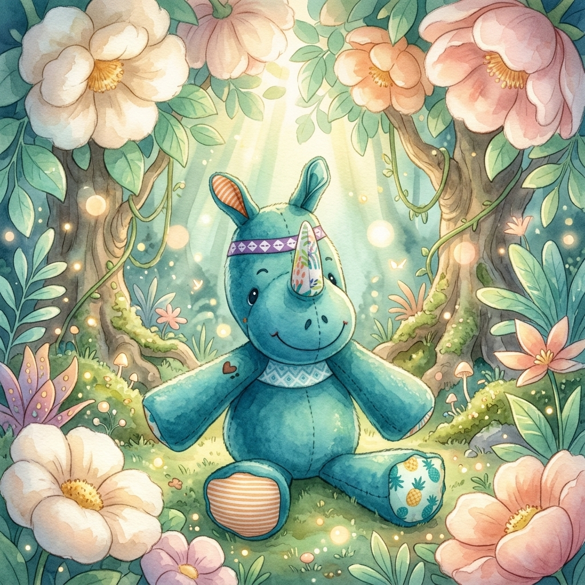
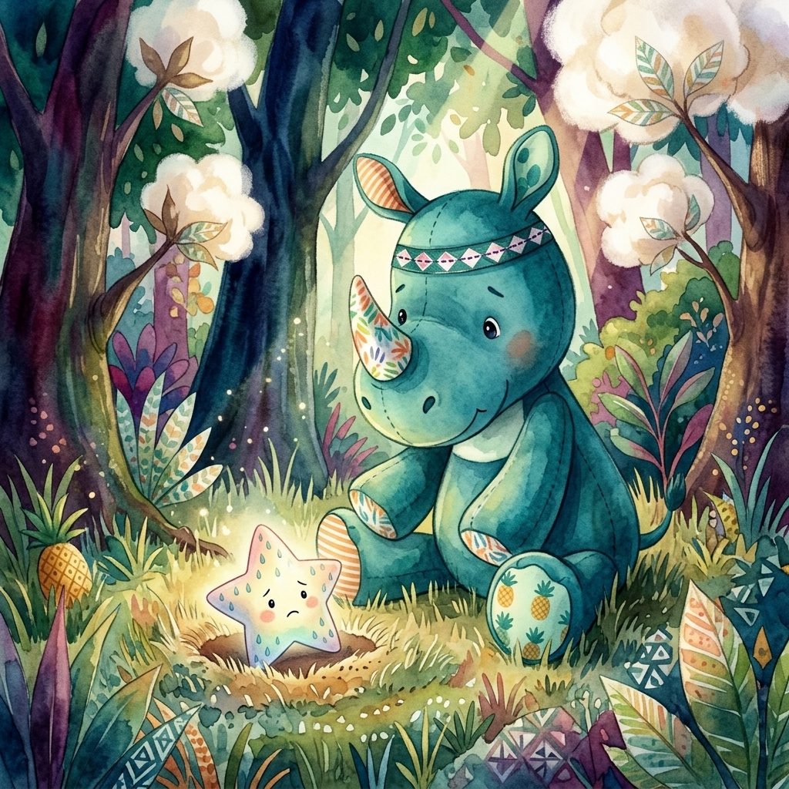

Marius
Le Roi du Ska ! 🎺
Préparez vos baskets, Marius vous invite à danser ! ♪
Tes Coloriages
{kind=link}
{kind=link}
{kind=link}
Clique sur un dessin pour l'enregistrer !
Ton Masque Marius
Deviens un super rhinocéros avec ce masque facile à fabriquer. Rugissement de doudou garanti !
Le Savais-tu ?
☀️ Les rhinocéros ont une peau très épaisse, mais ils peuvent attraper des coups de soleil ! C'est pour ça qu'ils adorent se rouler dans la boue fraîche. C'est leur crème solaire à eux !
🐎 Un rhinocéros peut courir aussi vite qu'un cheval ! C'est un vrai champion de course, même s'il pèse le poids d'une petite voiture.
L'Histoire de Marius

Marius le rhinocéros est un doudou très spécial. Il vit dans une jungle de velours où les arbres sont en coton et les rivières en sirop de menthe. Ce matin, Marius a trouvé une petite étoile tombée du ciel. Elle était toute triste car elle avait perdu son éclat.
"Ne t'inquiète pas, petite amie," dit Marius avec sa voix douce. Il installa l'étoile sur sa corne magique. Ensemble, ils traversèrent la Forêt des Songes. Marius marchait d'un pas sûr, ses pattes rayées orange et blanc faisant de petits bruits de velours sur le sol.
Arrivés au sommet de la Colline des Rêves, Marius leva sa tête vers le ciel. Il demanda à l'étoile de fermer les yeux et de penser à un souvenir joyeux. "Je pense au rire des enfants !" murmura l'étoile. Soudain, un éclat de lumière jaillit de la corne de Marius !
L'étoile s'envola, plus brillante que jamais, laissant derrière elle une traînée de poussière d'or. Pour remercier Marius, elle lui offrit un bandeau magique orné de motifs anciens. Depuis ce jour, Marius est le gardien officiel des rêves de tous les enfants.